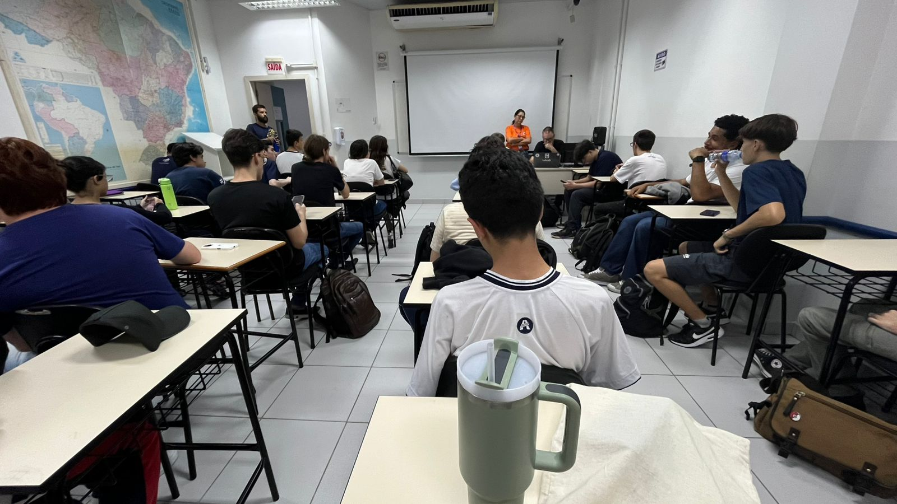
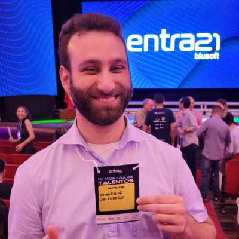
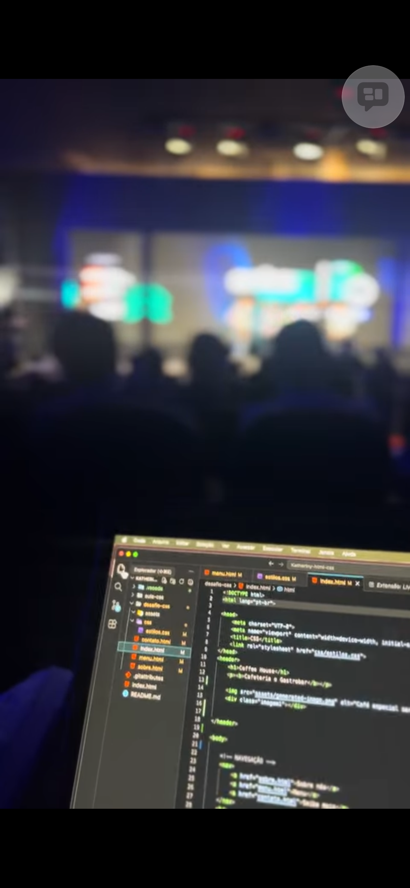

O começo
No início, a insegurança de migrar da saúde para a área de tecnologia. Aos poucos, cada aula ajudou a transformar essa insegurança em confiança.
Minha trajetória durante o curso
Uma coleção de aprendizados, amizades, desafios vencidos e momentos que ficaram guardados com carinho.
Este espaço foi criado para celebrar o caminho percorrido, agradecer às pessoas que fizeram parte dele e imaginar os próximos capítulos.
Explorar memóriasMinha jornada
Entre dúvidas, projetos, entregas e descobertas, o curso se tornou uma experiência de crescimento pessoal e profissional.
No início, a insegurança de migrar da saúde para a área de tecnologia. Aos poucos, cada aula ajudou a transformar essa insegurança em confiança.
Erros, códigos novos e dores de cabeça fizeram parte do processo. Eles ensinaram paciência, foco e persistência.
Cada projeto finalizado trouxe aquela sensação boa de evolução e mostrou que o esforço estava valendo a pena.
Hoje vejo uma versão mais preparada e segura para continuar aprendendo e construindo novos projetos.
Momentos divertidos
Substitua as imagens e textos por fotos reais das aulas, trabalhos, intervalos e apresentações.

Momentos de troca de conhecimentos.

O frio na barriga antes de falar e o orgulho depois de mostrar o resultado.

Conversas, risadas e pausas em baixo da árvore que deixaram a rotina mais leve e especial.
Amigos que fiz
Algumas amizades começam em uma sala de aula e seguem para muito além dela.

Companheiras nos cafés do intetvalo e sempre pronta para ajudar e aconselhar.
Marcante: companheirismo
Transformavam os desafios em conversas leves e engraçadas.
Marcante: bom humorProfessores
Cada professor deixou uma contribuição importante na minha formação.
Desenvolvimento Web
Obrigada por mostrar que tecnologia também é criatividade, aprendizado e solução de problemas.

Ingles para Tecnología
Obrigada por me ensinar a língua inglesa com tanta dedicação.
Empreendedorismo Inovação e Desenvolvimento profissional
Obrigada por cada aula, que se dedicou a nos ensinar o mundo do Empreendedorismo.

GitHub, Angular e TypeScript para Front-End
Obrigada por se empenhar em ensinar e auxiliar-me em minhas dúvidas.
O que aprendi
As barras são animadas quando a seção aparece na tela, usando Intersection Observer.
Meu futuro
Daqui alguns anos, quero olhar para trás e reconhecer este curso como um ponto de virada. Sonho em construir projetos úteis, continuar estudando, crescer na carreira e usar a tecnologia para criar soluções com propósito.
O futuro ainda tem muitas páginas em branco, mas agora eu tenho mais ferramentas, coragem e pessoas especiais na memória.
